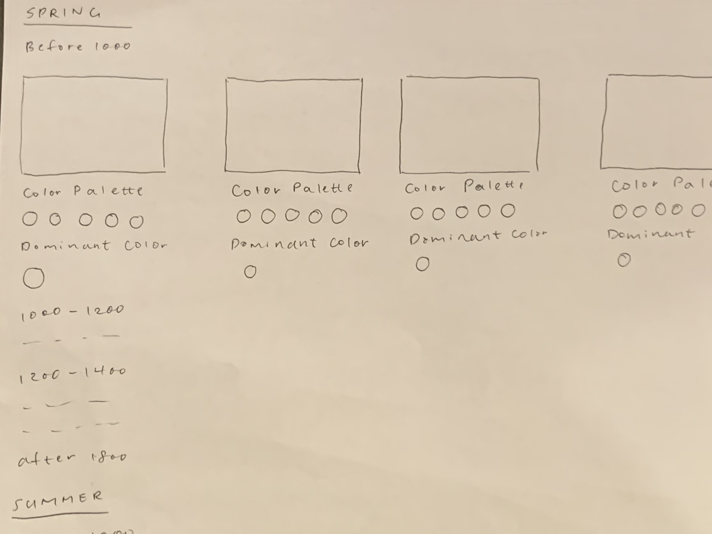
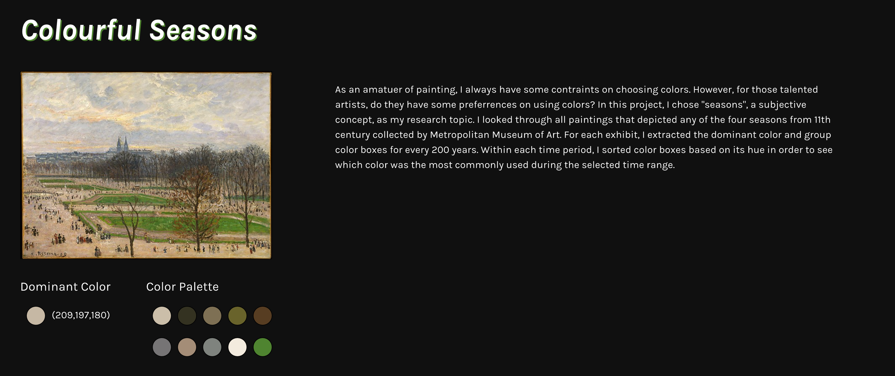
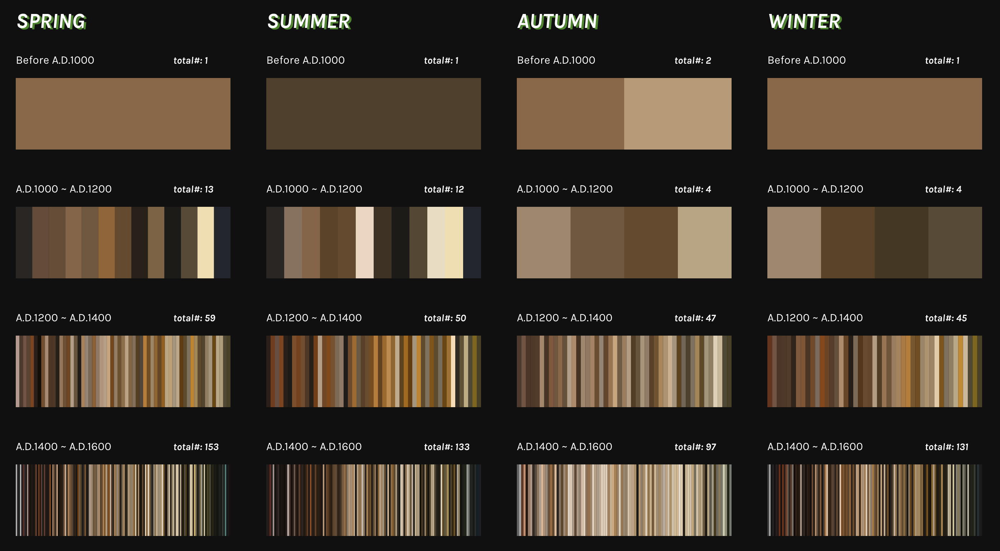
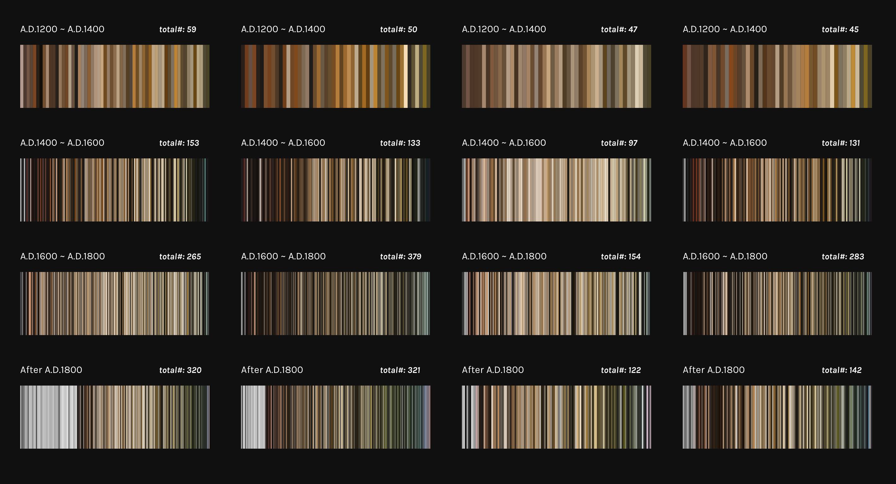

Project 2 - Colourful Seasons (Qualitative Data)
Making some more progress from project 1, this project demonstrates colors used in paintings in every season throughout the history. For every painting that are related to seasons in MET collection, I extracted the dominant color of every artwork to see if there were any favored colors in every season.
Link: Colourful SeasonsProcess
To have a deep look at color uses in artworks, I wanted to show the color palette and dominant color used in all paintings grouped by seasons. Therefore, I decided to order images of paintings in the order of spring, summer, fall, and winter. Within each season, I wanted to chronologically present paintings.
Project Overview
Iterating from the sketch provided above, I kept the chronological of presenting artworks. However, for each artwork, rather than showing the image, color palettes, and dominant colors of artworks, I only presented the dominant color. The data visualization includes four columns: spring, summer, autumn, and winter. In each column, there are same number of rows where one cell represents all artworks in every 200 years.
  